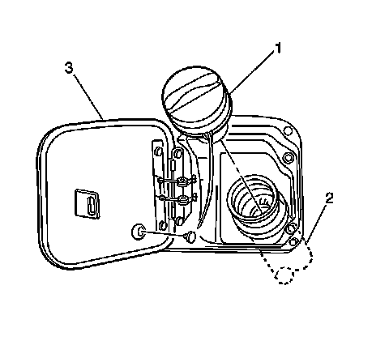
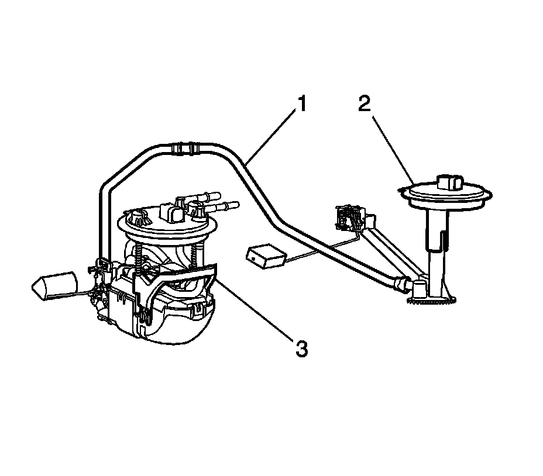
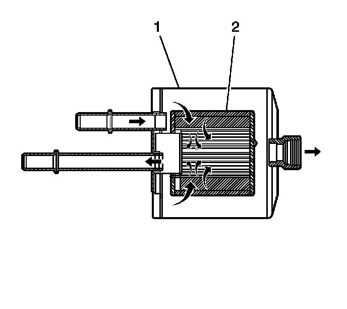
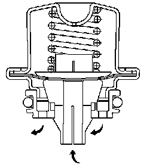

Fuel System Description
Fuel System Description
Fuel Tank
The fuel storage tank is made of high density polyethylene. The fuel storage tank is held in place by 2 metal straps that are attached to the underbody of the vehicle. The tank shape includes a sump in order to maintain a constant supply of fuel around the fuel pump strainer during low fuel conditions or during aggressive maneuvers.
The fuel tank also contains a fuel vapor vent valve with a roll-over protection. The vent valve also features a 2-phase vent calibration which increases the fuel vapor flow to the canister when the operating temperatures increase the tank pressure beyond an established threshold.
On-Board Refueling Vapor Recovery (ORVR) System
The on-board refueling vapor recovery (ORVR) system is an on-board vehicle system to recover fuel vapors during the vehicle refueling operation. The flow of liquid fuel down to the fuel tank filler neck provides a liquid seal. The purpose of ORVR is to prevent refueling vapor from exiting the fuel tank filler neck.
Fuel Tank Filler Pipe
In order to prevent refueling with leaded fuel, the fuel filler pipe has a built-in restrictor and a deflector. The opening in the restrictor will accept only the smaller unleaded gasoline fuel nozzle which must be fully inserted in order to bypass the deflector. The tank is vented during filling by an internal vent tube inside of the filler pipe.
Fuel Filler Cap

1 - Fuel Tank Filler Cap
2 - Fuel Tank Filler Pipe
3 - Fuel Filler Door
Notice: Use a fuel tank filler pipe cap with the same features as the original when a replacement is necessary. Failure to use the correct fuel tank filler pipe cap can result in a serious malfunction of the fuel system.
The fuel tank filler pipe is equipped with a turn to vent screw on the type cap which incorporates a ratchet action in order to prevent over-tightening.
The turn to vent feature allows the fuel tank pressure relief prior to removal. Instructions for proper use are imprinted on the cap cover. A vacuum safety relief valve is incorporated into this cap.
Modular Fuel Sender

1 - Fuel Transfer Tube
2 - Fuel Tank Module - Secondary
3 - Fuel Tank Module - Primary
The modular fuel sender assembly mounts to the threaded opening of the plastic fuel tank with a multi-lipped seal and a threaded retainer (nut). The reservoir, containing the exterior inlet strainer, the electric fuel pump, and the pump strainer, maintains contact with the tank bottom. This design provides:
* Optimum fuel level in the integral fuel reservoir during all fuel tank levels and during driving conditions
* An improved tank fuel level measuring accuracy
* An improved coarse straining and added pump inlet filtering
* More extensive internal fuel pump isolation for noiseless operation
The modular fuel sender assembly maintains an optimum fuel level in the reservoir (bucket). The fuel entering the reservoir is drawn in by the following components:
* The first stage of the fuel pump through the external strainer
AND/OR
* The secondary umbrella valve
OR
* The return fuel line, whenever the level of fuel is below the top of the reservoir
Fuel Pump
The electric fuel pump is a turbine pump which is located inside of the modular fuel sender. The electric fuel pump operation is controlled by the engine control module (ECM) through the fuel pump relay.
Fuel Sender Strainers
The strainers act as a coarse filter to perform the following functions:
* Filter contaminants
* Separate water from fuel
* Provide a wicking action that helps draw fuel into the fuel pump
Fuel stoppage at the strainer indicates that the fuel tank contains an abnormal amount of sediment or water. Therefore, the fuel tank will need to be removed and cleaned, and the filter strainer should be replaced.
In-Line Fuel Filter

The fuel filter is located on the fuel feed pipe, between the fuel pump and the fuel rail. The electric fuel pump supplies fuel through the in-line fuel filter to the fuel injection system. The fuel pressure regulator keeps the fuel available to the fuel injectors at a regulated pressure. Unused fuel is returned from the fuel filter to the fuel tank by a separate fuel return pipe. The paper filter element (2) traps particles in the fuel that may damage the fuel injection system. The filter housing (1) is made to withstand maximum fuel system pressure, exposure to fuel additives, and changes in temperature. There is no service interval for fuel filter replacement. Replace a restricted fuel filter.
EVAP Lines and Hoses
The evaporative emission (EVAP) line extends from the fuel tank vent valve to the EVAP canister and into the engine compartment. The EVAP line is made of nylon and connects to the EVAP canister with a fuel resistant rubber hose and quick connect fittings.
Fuel Pressure Regulator

The fuel pressure regulator attaches to the fuel return pipe on the fuel sender assembly. The fuel pressure regulator is a diaphragm-operated relief valve. A software bias compensates the injector on-time because the fuel pressure regulator is not referenced to manifold vacuum. The injector pulse width varies with the signal from the mass air flow/intake air temperature (MAF/IAT) sensor.
With the engine running at idle, the system fuel pressure at the pressure test connection should be between 380-410 kPa (55-60 psi). With the system pressurized and the pump OFF, the pressure should stabilize and hold. If the pressure regulator supplies a fuel pressure which is too low or too high, a driveability condition will result.
Fuel Rail
The fuel rail consists of 3 parts:
* The pipe that carries fuel to each injector
* The fuel pressure test port
* Eight individual fuel injectors
The fuel rail is mounted on the intake manifold and distributes the fuel to each cylinder through the individual injectors.
Fuel Injectors
The fuel injector is a solenoid device that is controlled by the engine control module (ECM). When the ECM energizes the injector coil, a normally closed ball valve opens, allowing the fuel to flow past a director plate to the injector outlet. The director plate has holes that control the fuel flow, generating a dual conical spray pattern of finely atomized fuel at the injector outlet. The fuel from the outlet is directed at both of the intake valves, causing the fuel to become further vaporized before entering the combustion chamber.
The fuel injectors will cause various driveability conditions if the following conditions occur:
* If the injectors will not open
* If the injectors are stuck open
* If the injectors are leaking
* If the injectors have a low coil resistance
Engine Fueling
The engine is fueled by 8 individual injectors, one for each cylinder, that are controlled by the engine control module (ECM). The ECM controls each injector by energizing the injector coil for a brief period once every other engine revolution. The length of this brief period, or pulse, is carefully calculated by the ECM to deliver the correct amount of fuel for proper driveability and emissions control. The period of time when the injector is energized is called the pulse width and is measured in milliseconds, thousandths of a second.
While the engine is running, the ECM is constantly monitoring the inputs and recalculating the appropriate pulse width for each injector. The pulse width calculation is based on the injector flow rate, mass of fuel the energized injector will pass per unit of time, the desired air/fuel ratio, and actual air mass in each cylinder and is adjusted for battery voltage, short term, and long term fuel trim (FT). The calculated pulse is timed to occur as each cylinders intake valves are closing to attain largest duration and most vaporization.
Fueling during a crank is slightly different than fueling during an engine run. As the engine begins to turn, a prime pulse may be injected to speed starting. As soon as the ECM can determine where in the firing order the engine is, the ECM begins pulsing the injectors. The pulse width during the crank is based on the coolant temperature and the engine load.
The fueling system has several automatic adjustments in order to compensate for the differences in the fuel system hardware, the driving conditions, the fuel used, and the vehicle aging. The basis for the fuel control is the pulse width calculation that is described above. Included in this calculation are an adjustment for the battery voltage, the short term FT, and the long term FT. The battery voltage adjustment is necessary since the changes in the voltage across the injector affect the injector flow rate.
Fuel Trim
The engine control module (ECM) controls the air/fuel metering system in order to provide the best possible combination of driveability, fuel economy, and emission control. The ECM monitors the heated oxygen sensor (HO2S) signal voltage while fuel injectors based on this signal. The ideal fuel trim (FT) values are around 0 percent for both short term and long term FT. A positive FT value indicates the ECM is adding fuel in order to compensate for a lean condition by increasing the pulse width. A negative FT value indicates that the ECM is reducing the amount of fuel in order to compensate for a rich condition by decreasing the pulse width. A change made to the fuel delivery changes the short term and long term FT values. The short term FT values change rapidly in response to the HO2S signal voltage. These changes fine tune the engine fueling. The long term FT makes coarse adjustments to fueling in order to re-center and restore control to short term FT. A scan tool can be used to monitor the short term and long term FT values. A block of cells contain information arranged in combinations of engine RPM and load for a full range of vehicle operating conditions. The long term FT diagnostic is based on an average of cells currently being used. If the powertrain control module (PCM) detects an excessive lean or rich condition, the ECM will set a FT DTC.
Sequential Fuel Injection (SFI)
The engine control module (ECM) controls the fuel injectors based on information that the ECM receives from several information sensors. Each injector is fired individually in the engine firing order, which is called sequential fuel injection. This allows precise fuel metering to each cylinder and improves the driveability under all of the driving conditions.
The ECM has several operating modes for fuel control, depending on the information that has been received from the sensors.
Starting Mode
When the engine control module (ECM) detects reference pulses from the crankshaft position (CKP) sensor, the ECM will enable the fuel pump. The fuel pump runs and builds up pressure in the fuel system. The ECM then monitors the mass air flow (MAF), intake air temperature (IAT), engine coolant temperature (ECT), and the throttle position (TP) sensor signal in order to determine the required injector pulse width for starting.
Clear Flood Mode
If the engine is flooded with fuel during starting and will not start, the Clear Flood Mode can be manually selected. To select Clear Flood Mode, push the accelerator to wide open throttle (WOT). With this signal, the engine control module (ECM) will completely turn OFF the injectors and will maintain this stage as long as the ECM indicates a WOT condition with engine speed below 1,000 RPM.
Run Mode
The Run Mode has 2 conditions: Open Loop operation and Closed Loop operation. When the engine is first started and the engine speed is above 480 RPM, the system goes into an Open Loop operation. In an Open Loop operation, the engine control module (ECM) ignores the signals from the oxygen sensors and calculates the required injector pulse width based primarily on inputs from the mass air flow (MAF), intake air temperature (IAT), and engine coolant temperatures (ECT) sensors.
In a Closed Loop, the ECM adjusts the calculated injector pulse width for each bank of injectors based on the signals from each oxygen sensor.
Acceleration Mode
The engine control module (ECM) monitors the changes in the throttle position (TP) and the mass air flow (MAF) sensor signals in order to determine when the vehicle is being accelerated. The ECM will then increase the injector pulse width in order to provide more fuel for improved driveability.
Deceleration Mode
The engine control module (ECM) monitors changes in the throttle position (TP) and the mass air flow (MAF) sensor signals to determine when the vehicle is being decelerated. The ECM will then decrease injector pulse width or even shut OFF injectors for short periods to reduce exhaust emissions.
Battery Voltage Correction Mode
The engine control module (ECM) can compensate in order to maintain acceptable vehicle driveability when the ECM sees a low battery voltage condition. The ECM compensates by performing the following functions:
* Increasing the injector pulse width in order to maintain the proper amount of fuel being delivered
* Increasing the idle speed to increase the generator output
Fuel Shut-Off Mode
The engine control module (ECM) has the ability to completely turn OFF all of the injectors or selectively turn OFF some of the injectors when certain conditions are met. These fuel shut-off modes allow the ECM to protect the engine from damage and also to improve the vehicles driveability.
The ECM will disable all injectors under the following conditions:
* Ignition OFF-Prevents engine run-on
* Ignition ON but no ignition reference signal-Prevents flooding or backfiring
* A high engine speed-Above the red line
* A high vehicle speed-Above the rated tire speed
* The extended high speed closed throttle coastdown-Reduces the emissions and increases engine braking
The ECM will selectively disable the injectors under the following conditions:
* The torque management enabled-Transmission shifts or abusive maneuvers
* The traction control enabled-In conjunction with the front brakes applying